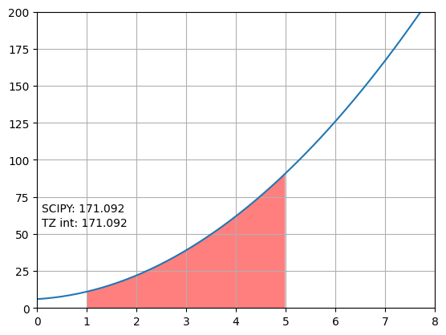

미적분 값 계산하기¶
함수의 미분¶
1import matplotlib.pyplot as plt
2import numpy as np
3
4
5def f(x):
6 return 3 * x ** 2 + 2 * x + 6
7
8
9def g(func, x):
10 y = []
11 h = 0.01
12 for _x in x:
13 y.append((func(_x + h) - func(_x)) / h)
14 return np.array(y)
15
16
17if __name__ == "__main__":
18 x = np.linspace(0, 10)
19 ax1 = plt.subplot(2, 1, 1)
20 ax1.set_title("Original function")
21 ax1.set_xlim(0, 10)
22 ax1.set_ylim(0, 400)
23 ax1.axes.xaxis.set_ticklabels([])
24 ax1.plot(x, f(x))
25 ax1.grid(True)
26 ax2 = plt.subplot(2, 1, 2)
27 ax2.set_title("Differential function")
28 ax2.set_xlim(0, 10)
29 ax2.set_ylim(0, 200)
30 ax2.plot(x, g(f, x))
31 ax2.grid(True)
32 plt.savefig("EX1_function_differential.png", bbox_inches='tight')
데이터의 미분량¶
1import os
2
3os.chdir(os.path.abspath(os.path.dirname(__file__)))
4
5"""데이터의 미분량
6소스코드의 실행 디렉토리와 데이터파일의 디렉토리가 일치하도록 조정
7"""
8import numpy as np
9import matplotlib.pyplot as plt
10
11x = []
12y = []
13
14with open("data.csv", "r") as f:
15 for line in f.readlines():
16 _x, _y = [float(i) for i in line.split(" ")]
17 x.append(_x)
18 y.append(_y)
19
20
21def g(x, y):
22 new_x = []
23 new_y = []
24 for idx in range(len(x) - 1):
25 new_x.append((x[idx] + x[idx + 1]) / 2)
26 new_y.append((y[idx + 1] - y[idx]) / (x[idx + 1] - x[idx]))
27 return new_x, new_y
28
29
30if __name__ == "__main__":
31 fit = np.poly1d(np.polyfit(x, y, 2))
32 fit_x = np.linspace(0, 1)
33 fit_y = fit(fit_x)
34
35 # 그래프 1: 원시데이터
36 ax1 = plt.subplot(2, 1, 1)
37 ax1.set_title("Original function")
38 ax1.set_xlim(0, 1)
39 ax1.set_ylim(-2, 2)
40 ax1.axes.xaxis.set_ticklabels([])
41 ax1.plot(fit_x, fit_y, "k--")
42 ax1.scatter(x, y)
43 ax1.grid(True)
44
45 # 그래프 2: 미분한 데이터
46 ax2 = plt.subplot(2, 1, 2)
47 ax2.set_title("Differential function")
48 ax2.set_xlim(0, 1)
49 ax2.set_ylim(-20, 20)
50 ax2.plot(fit_x[:-1], np.diff(fit_y) / (fit_x[1] - fit_x[0]), "k--")
51 ax2.scatter(*g(x, y))
52 ax2.grid(True)
53
54 plt.savefig("EX2_data_differential.png", bbox_inches='tight')
함수의 적분¶
 1import os
2os.chdir(os.path.abspath(os.path.dirname(__file__)))
3
4import numpy as np
5import matplotlib.pyplot as plt
6from scipy.integrate import trapezoid
7
8h = 0.01
9min_x = 1
10max_x = 5
11
12
13def f(x):
14 return 3 * x ** 2 + 2 * x + 6
15
16
17def int_f(func, x_min, x_max, h):
18 output = 0
19 x = np.arange(x_min, x_max, h)
20 for idx in range(len(x) - 1):
21 output += (func(x[idx]) + func(x[idx + 1])) * h / 2
22 return output
23
24
25if __name__ == "__main__":
26 x = np.linspace(0, 8)
27 x_inf = np.arange(min_x, max_x, h)
28 y_inf = f(x_inf)
29 x_inf = np.concatenate(([x_inf[0]], x_inf, [x_inf[-1]]))
30 y_inf = np.concatenate(([0], y_inf, [0]))
31
32 plt.plot(x, f(x))
33 plt.fill(x_inf, y_inf, "r", alpha=0.5)
34 plt.text(0.1, 55, f"TZ int: {int_f(f, min_x, max_x, h):.3f}")
35 plt.text(0.1, 65, f"SCIPY: {trapezoid(f(x_inf), x_inf, h):.3f}")
36 plt.grid(True)
37 plt.xlim(0, 8)
38 plt.ylim(0, 200)
39 plt.savefig("EX3_function_integration.png", bbox_inches='tight')
데이터의 적분¶
1import os
2os.chdir(os.path.abspath(os.path.dirname(__file__)))
3
4import matplotlib.pyplot as plt
5import numpy as np
6from scipy.optimize import curve_fit
7from scipy.integrate import trapezoid
8
9# 데이터 읽어들이기
10bins, count = [], []
11with open("hist_data.csv", "r") as f:
12 for line in f.readlines():
13 _b, _c = [float(i) for i in line.split(",")]
14 bins.append(_b)
15 count.append(_c)
16
17# 모델 함수
18def particle(x, a, b, c):
19 return a * np.exp(-((x - b) ** 2) / (2 * c ** 2))
20
21
22def model(x, a_0, a_1, a_2, a_3, a_4, a_5):
23 p_a = particle(x, a_0, a_1, a_2)
24 p_b = particle(x, a_3, a_4, a_5)
25 return p_a + p_b
26
27if __name__ == "__main__":
28 popt, pcov = curve_fit(model, bins, count, p0=[100, 1, 0.1, 100, 4, 0.1])
29 xdata = np.linspace(0, 4, 100)
30
31 print(popt)
32
33 p_a_value = trapezoid(particle(xdata, *popt[:3]), xdata)
34 p_b_value = trapezoid(particle(xdata, *popt[3:]), xdata)
35
36 print(f"Particle A: {p_a_value:.2f}")
37 print(f"Particle B: {p_b_value:.2f}")
38 print(f"Proportion particle data (A/B): {p_a_value/p_b_value:.3f}")
39 print(f"Proportion particle reference (A/B): {6000/10000:.3f}")
40
41 plt.plot(xdata, model(xdata, *popt), "k")
42 plt.plot(xdata, particle(xdata, *popt[:3]), "r")
43 plt.plot(xdata, particle(xdata, *popt[3:]), "b")
44 plt.bar(bins, count, 0.05, color="#AAA")
45 plt.savefig("EX4_data_integration.png", bbox_inches='tight')